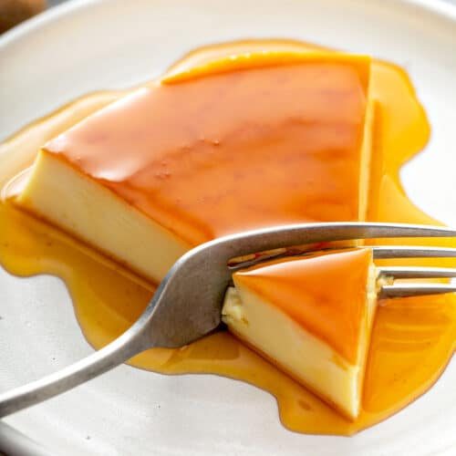

Flan man

What is flan?
"Flan" can refer to a couple different things depending on where you live. In this case,
it's a baked custard dessert topped with caramel. The Spanish dessert is similar to the French crème caramel.
Ingredients
- 1 cup white sugar
- 3 large eggs
- 1 can sweetened condensed milk
- 1 can evaporated milk
- 1 tablespoon vanilla extract
Method
- Preheat the oven to 350 degrees F (175 degrees C).
- Melt sugar in a medium saucepan over medium-low heat until liquefied and golden in color. Carefully pour hot syrup into a 9-inch round glass baking dish, turning the dish to evenly coat the bottom and sides; set aside.
- Beat eggs in a large bowl. Add condensed milk, evaporated milk, and vanilla; beat until smooth. Pour egg mixture into the baking dish; cover with aluminum foil.
- Bake in preheated oven for 1 hour. Let cool completely.
- To serve, carefully invert onto a rimmed serving plate; let caramel sauce flow over flan.